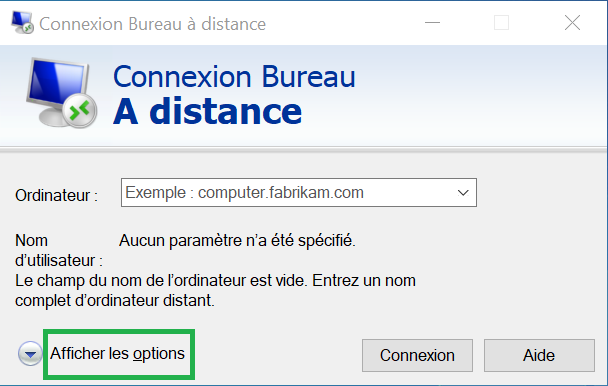

Bureau à Distance
Login
Systèmes d'exploitation
ISO
VPN
VPN Logiciel
Bureau à distance
Logiciel du bureau à distance

La liste des applications pour faire du bureau à distance
Anydesk
TeamViewer
Microsoft Remote Desktop Windows
Microsoft Remote Desktop Macos
VNC
RemotePC